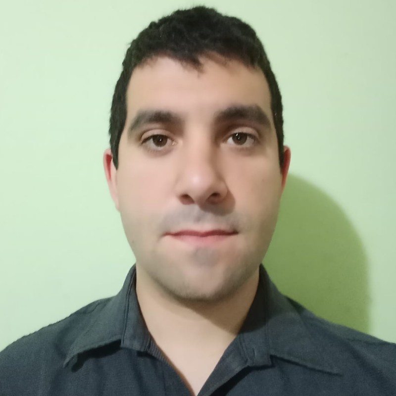
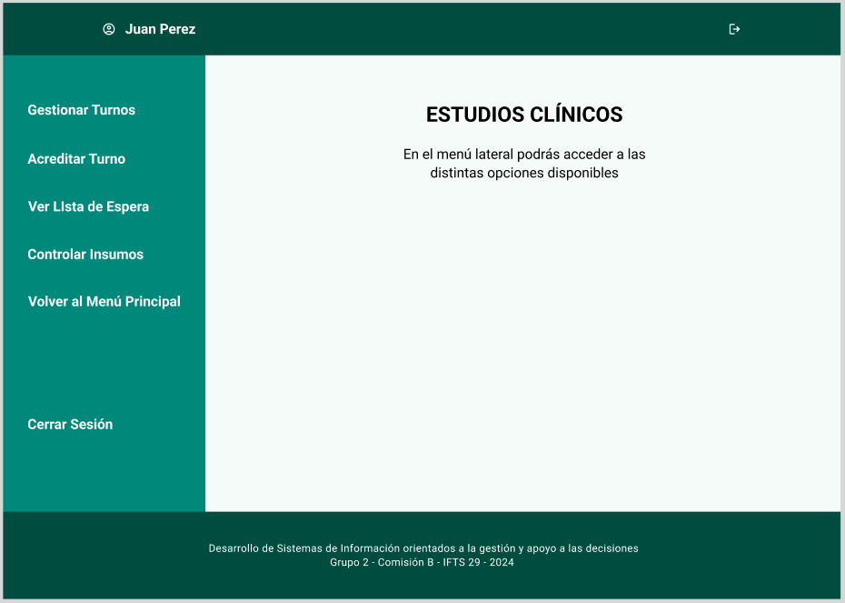
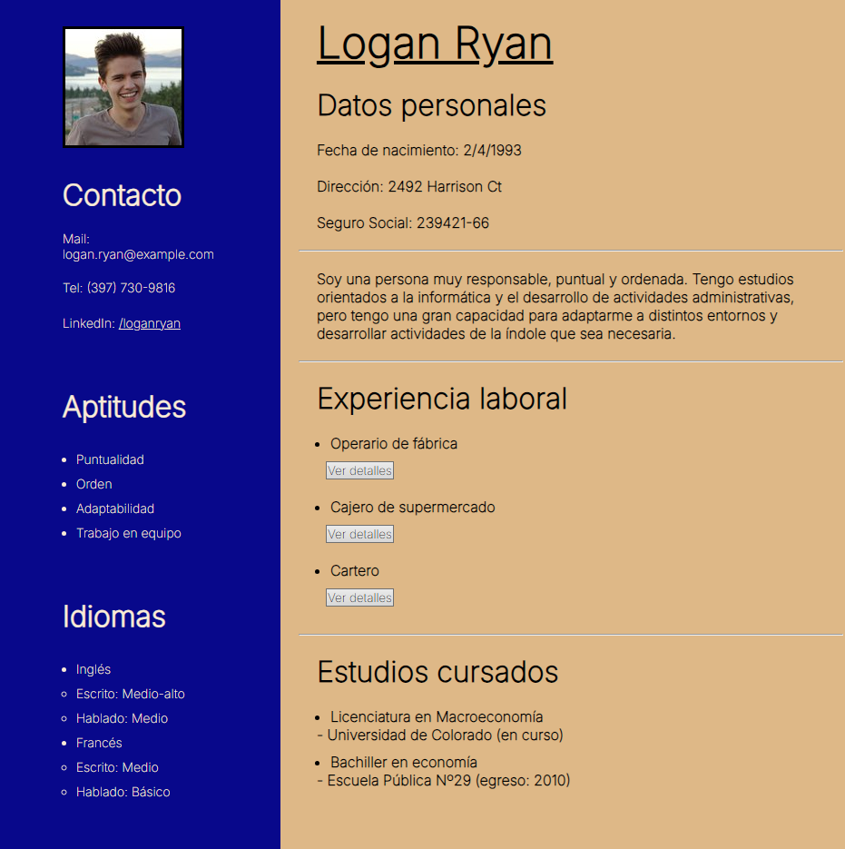

Bienvenido a mi Portafolio
Mi foto
Sobre mí
¡Hola, soy Mauricio!
Soy estudiante de la Tecnicatura Superior en Desarrollo de Software, con un gran interés en el desarrollo web y la programación. Mi objetivo es aplicar mis conocimientos para crear soluciones innovadoras y eficientes.
Tengo experiencia en lenguajes como HTML, CSS, JavaScript, Python y C#, y siempre estoy en busca de nuevas herramientas y tecnologías que me ayuden a mejorar mis habilidades. Actualmente, me estoy enfocando en aprender más sobre frameworks de desarrollo web y en profundizar mis conocimientos en desarrollo backend.
Más allá de mis estudios, me encanta colaborar en proyectos que puedan marcar una diferencia y trabajar en equipo para superar retos. Soy una persona curiosa, creativa y orientada a la resolución de problemas, con el objetivo de construir una carrera sólida en el mundo del desarrollo.
Soy un apasionado por la tecnología y la programación, siempre buscando aprender nuevas tecnologías y mejorar mis habilidades.
Qué hago
Desarrollo Web
Estudio para poder lograr la creación de sitios web modernos y adaptativos utilizando tecnologías como HTML, CSS, y JavaScript. Mi enfoque quiero que esté en construir interfaces intuitivas, funcionales y estéticamente atractivas, asegurando que la experiencia del usuario sea óptima en cualquier dispositivo. A través del uso de principios de diseño responsivo y técnicas de UX/UI, me aseguro de que cada proyecto esté lo más optimizado posible.
Además, estoy en constante aprendizaje sobre frameworks de desarrollo, que me permiten desarrollar aplicaciones web dinámicas y altamente interactivas. Trabajo también con tecnologías backend como Node.js para crear soluciones completas, logrando una integración eficiente entre el frontend y el backend.
Programación Orientada a Objetos
Estudio para aplicar los principios de la Programación Orientada a Objetos (POO) para diseñar soluciones escalables y bien estructuradas. Utilizo conceptos fundamentales como clases, herencia, encapsulamiento y polimorfismo para crear software modular y fácil de mantener. Mi experiencia en POO incluye el desarrollo de aplicaciones en lenguajes como Python y C#, donde aplico patrones de diseño y buenas prácticas para optimizar el rendimiento y la reutilización del código.
Este enfoque me permite crear sistemas que son flexibles y adaptables, facilitando su expansión a medida que los requerimientos del proyecto cambian. Mi objetivo es construir software robusto y eficiente, que se adapte a diferentes necesidades y que ofrezca una base sólida para el desarrollo de futuras funcionalidades.
Mis Conocimientos
| Tecnología | Conocimiento |
|---|---|
| HTML | Básico |
| CSS | Básico |
| Python | Intermedio |
| C# | Intermedio |
Mis Proyectos

Clínica SePrice
Trabajo realizado en grupo para la materia Programación Orientada a Objetos que requería crear el software administrativo para una clínica.
En este proyecto se utilizaron las siguientes tecnologías: NestJS, TypeORM para el backend, Angular como framework para el frontend y MySQL para la gestión de las bases de datos

CV de ejemplo
Trabajo final de un curso introductorio de desarrollo web orientado al frontend utilizando HTML, CSS y JavaScript.
Link al proyectoTestimonios
En esta sección a futuro se incluirán los testimonios de clientes para los cuales realice mis proyectos de manera profesional.
"Mauricio hizo un trabajo excelente en nuestro proyecto. Su dedicación fue excepcional."
- Cliente 1"Su conocimiento en desarrollo web y Python fue clave para el éxito de nuestro equipo."
- Cliente 2